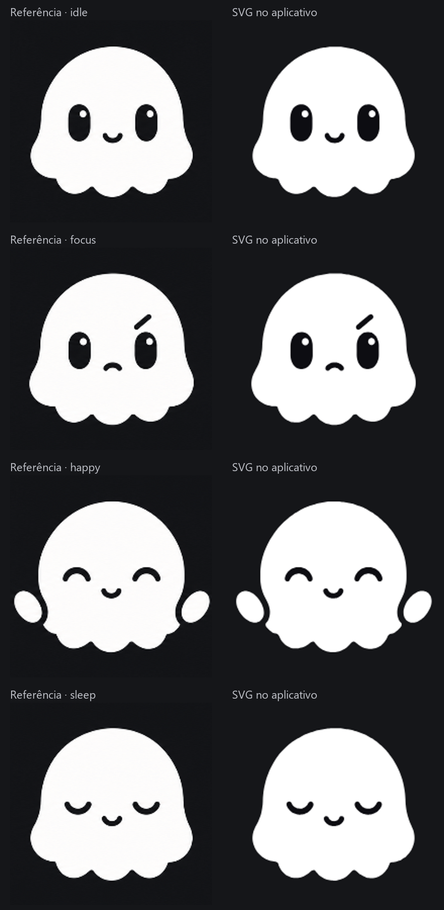

Boo: referência e SVG
À esquerda, a arte aprovada na escala do componente. À direita, o SVG capturado na galeria real do aplicativo, em repouso e com as cores padrão.

O contorno é extraído por luminância e convertido em curvas vetoriais. A textura e a iluminação residual do PNG não são reproduzidas. A deformação ambiente é verificada separadamente e respeita movimento reduzido.